Gerenciar Usuários
Permite ao administrador gerenciar as contas de acesso: listar, criar, editar, ativar ou inativar contas e definir o perfil de acesso. Não há autocadastro: todas as contas são criadas pelo administrador.
Ator: Administrador
Portfólio do Projeto de Estágio · Engenharia de Software
Plataforma web para monitoramento e organização de editais públicos.
Objetivo: centralizar os editais acompanhados pela equipe da Extractta, reunir as informações de cada oportunidade em um só lugar e dar visibilidade aos prazos de abertura, reduzindo o tempo gasto na triagem manual.
O LicitaAI foi desenvolvido durante o estágio na Extractta, empresa de tecnologia, dados e automação. Nesta etapa foram implementados o gerenciamento de usuários e o gerenciamento de editais, com autenticação, controle de acesso por perfil e um painel que destaca os editais com abertura nos próximos 30 dias. As próximas etapas preveem a importação automática de editais do PNCP, alertas de oportunidade e relatórios gerados com apoio de inteligência artificial.
Com a Lei nº 14.133/2021, a divulgação das contratações públicas passou a ser centralizada no Portal Nacional de Contratações Públicas (PNCP). Na prática, porém, identificar oportunidades continua sendo um trabalho manual: cada órgão publica no seu ritmo, os documentos chegam em formatos diferentes e a leitura inicial de cada edital exige o tempo de um profissional qualificado.
Na Extractta, a busca, o download e a análise dos editais eram feitos à mão, e o controle ficava em planilhas e anotações espalhadas. O efeito mais grave era a perda de oportunidades compatíveis por causa do prazo, e não por decisão técnica.
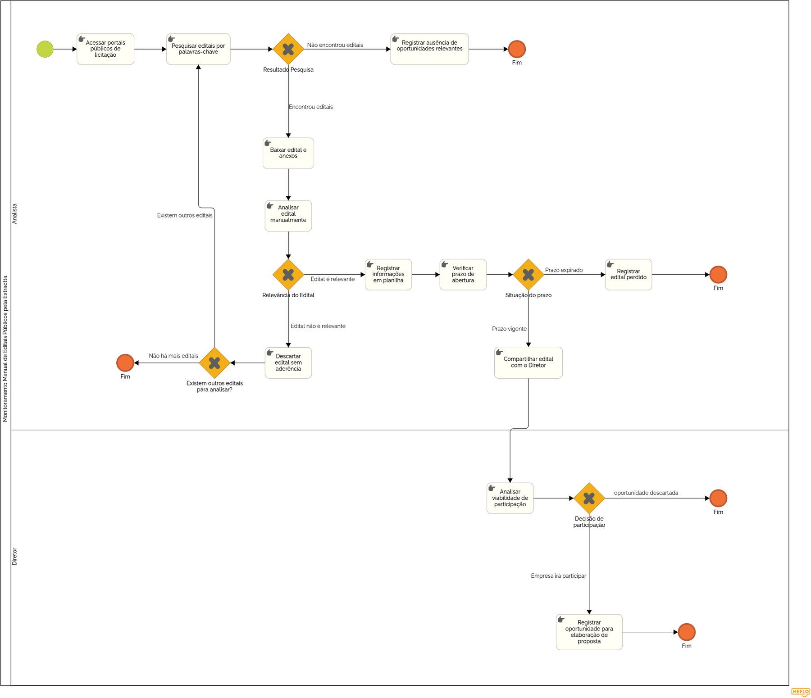
O ponto crítico: o prazo de abertura só é verificado depois da análise manual e do registro em planilha. Quando o prazo já expirou, todo esse trabalho termina na atividade "Registrar edital perdido". O painel do LicitaAI ataca exatamente esse gargalo.
A interface é uma aplicação de página única (SPA): o servidor não monta telas, apenas recebe e devolve dados em JSON. O back-end é organizado em camadas: o controller recebe a requisição, o service aplica as regras de negócio e o repository cuida da persistência.
A autenticação usa tokens JWT, de modo que o servidor não guarda sessão. As senhas são gravadas apenas como hash BCrypt, e uma conta inativada perde o acesso imediatamente, mesmo que ainda tenha um token válido.
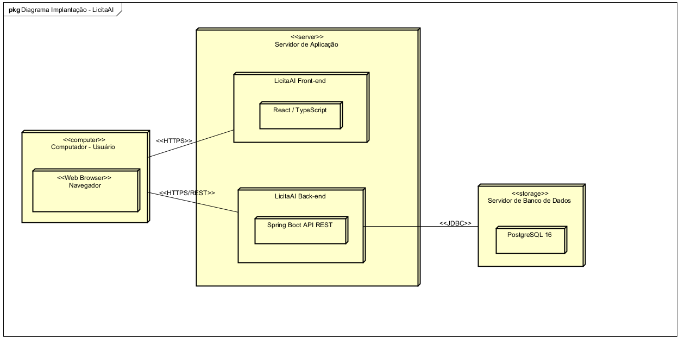
O sistema prevê seis casos de uso e dois atores: o Usuário (analista) e o Administrador, que herda as permissões do usuário e acrescenta o gerenciamento de contas.
Permite ao administrador gerenciar as contas de acesso: listar, criar, editar, ativar ou inativar contas e definir o perfil de acesso. Não há autocadastro: todas as contas são criadas pelo administrador.
Ator: Administrador
Permite ao usuário autenticado listar os editais, consultar os detalhes, cadastrar, editar, excluir e aplicar filtros por termo, UF, modalidade e status.
Ator: Usuário
Permitirá registrar os dados da organização a que os usuários estão vinculados, preparando a plataforma para uso por mais de uma empresa.
Ator: Administrador
Permitirá ao administrador consultar o histórico de processamento dos editais, com a situação de cada documento e as mensagens registradas pelo sistema.
Ator: Administrador
Permitirá configurar critérios de interesse, como palavras-chave, UF, modalidade e faixa de valor, e receber avisos quando um edital compatível for identificado.
Ator: Usuário
Permitirá solicitar a extração automática das informações de um edital, produzindo um relatório com resumo, pontos relevantes, riscos e recomendação, com processamento assíncrono e revisão manual.
Ator: Usuário
O cronograma original do estágio previa a implementação dos CRUDs para junho de 2026. A implementação foi concluída em agosto, e os casos de uso seguintes foram replanejados conforme a tabela abaixo.
| Item | Tipo | Situação | Conclusão / previsão |
|---|---|---|---|
| Documento de Visão, Pedidos do Investidor e Especificação Suplementar | Documentação | Concluído | Mai/2026 |
| Diagrama de Caso de Uso, Workflow AS-IS e Glossário | Documentação | Concluído | Jun/2026 |
| Especificações dos casos de uso Gerenciar Usuários e Gerenciar Editais | Documentação | Concluído | Ago/2026 |
| Gerenciar Usuários | Caso de uso | Concluído | Ago/2026 |
| Gerenciar Editais | Caso de uso | Concluído | Ago/2026 |
| Painel inicial com os editais de prazo próximo | Funcionalidade | Concluído | Ago/2026 |
| Diagramas de classe, entidade e relacionamento, implantação, sequência e estado | Documentação | Concluído | Ago/2026 |
| Relatório de Estágio (primeira versão) | Documentação | Concluído | Set/2026 |
| Cadastrar Perfil da Empresa | Caso de uso | Previsto | Dez/2026 |
| Acompanhar Logs de Processamento | Caso de uso | Previsto | Dez/2026 |
| Importação automática de editais do PNCP | Funcionalidade | Previsto | Fev/2027 |
| Controlar Alertas de Oportunidade | Caso de uso | Previsto | Mar/2027 |
| Gerar Relatório com a IA | Caso de uso | Previsto | Abr/2027 |
Planejamento elaborado no início do estágio, de fevereiro a setembro de 2026, dividido em quatro fases: elaboração, definição, execução e controle do projeto.
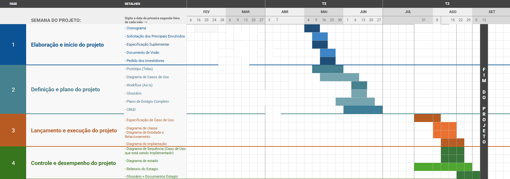
Diagramas elaborados no Astah (UML) e no brModelo. Cada link abre o diagrama em tamanho original.
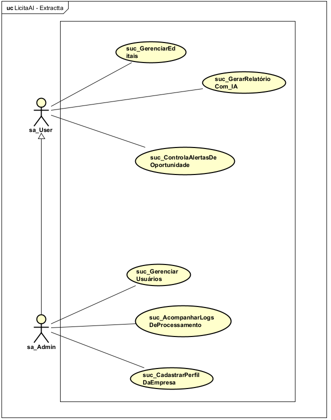
Visão funcional completa, com os seis casos de uso e os dois atores do sistema.
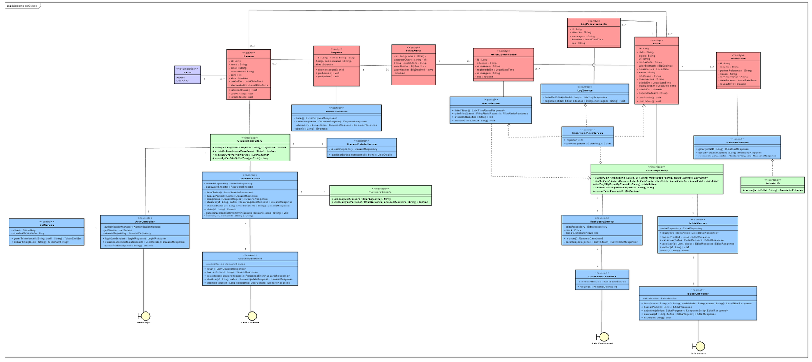
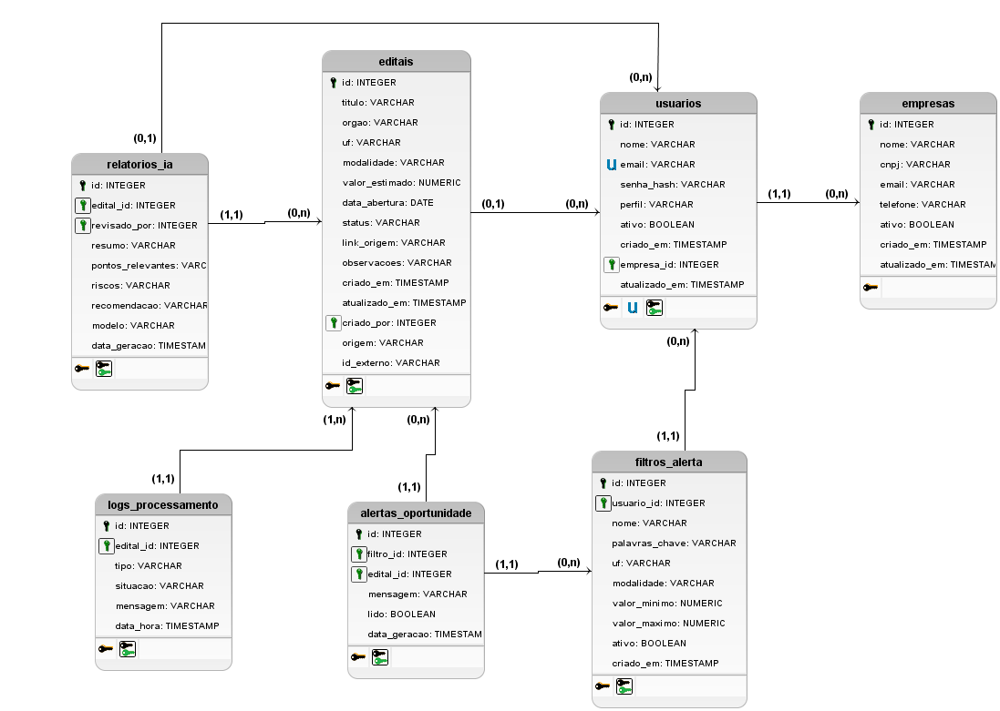
Modelo de dados completo, com as tabelas de usuários e editais já implementadas e as tabelas previstas.
Distribuição física da solução: navegador, servidor de aplicação e servidor de banco de dados.
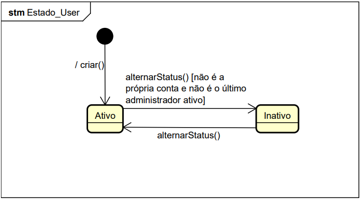
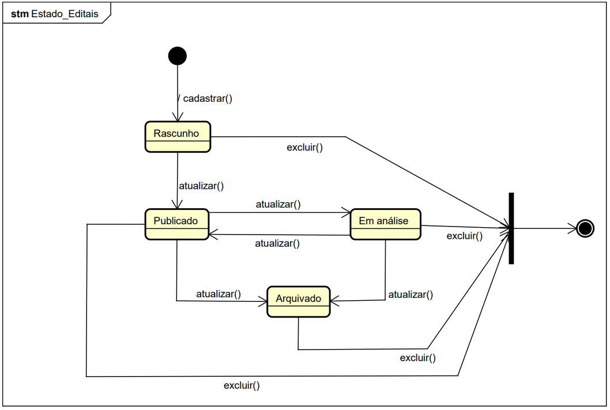
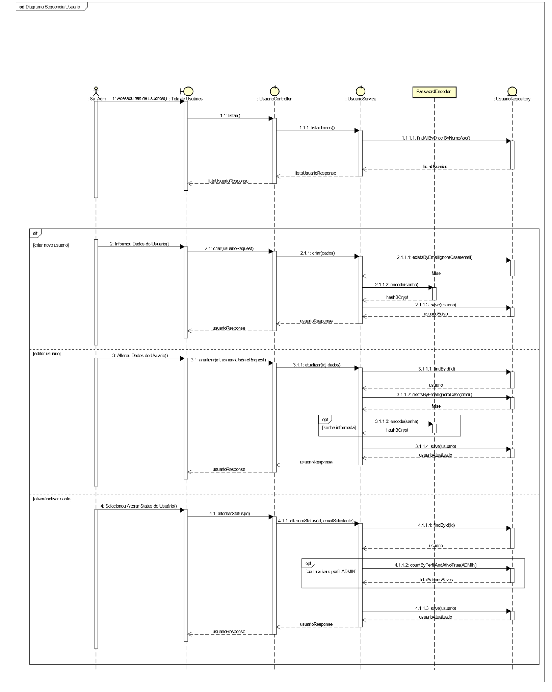
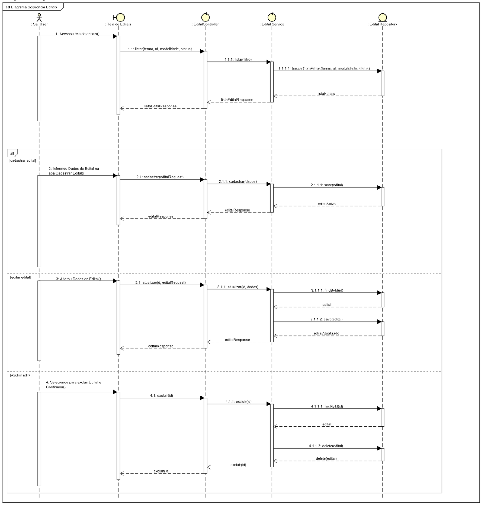
Evidências do funcionamento do sistema nas principais funcionalidades implementadas.
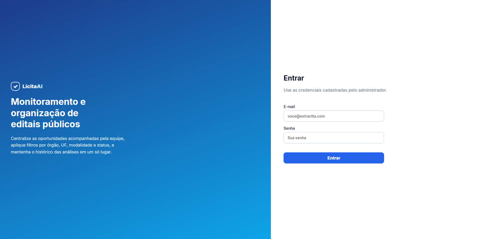
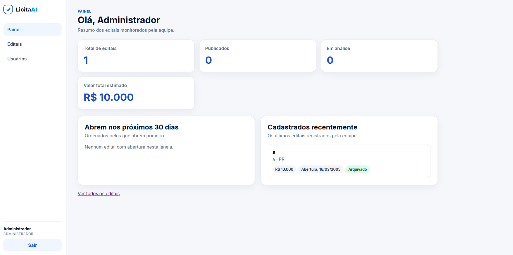
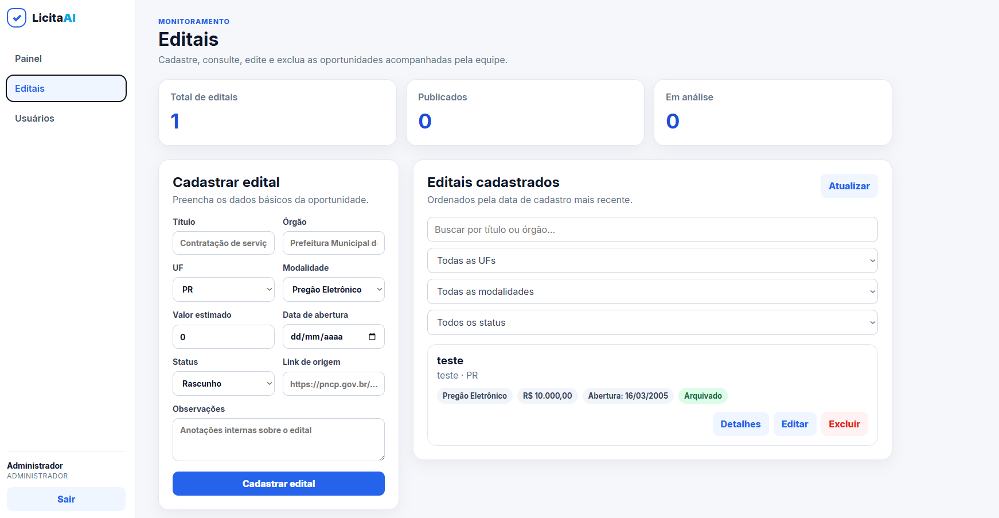
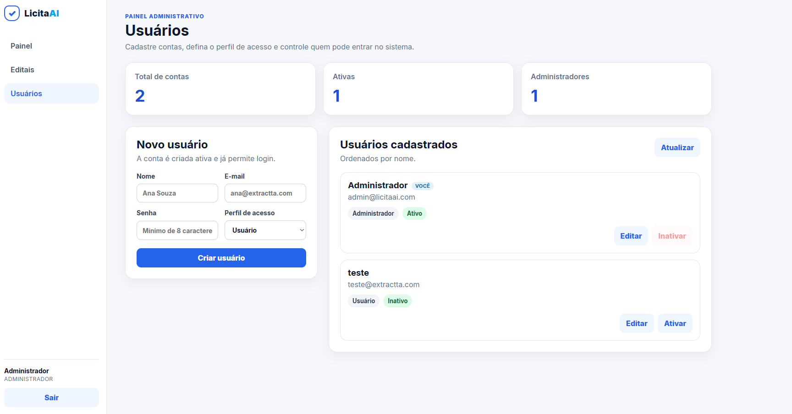
Introdução, modelagem do sistema, telas, workflow AS-IS, recursos e ambiente de desenvolvimento, cronograma, conclusões e trabalhos futuros.
Versão atual: setembro de 2026.